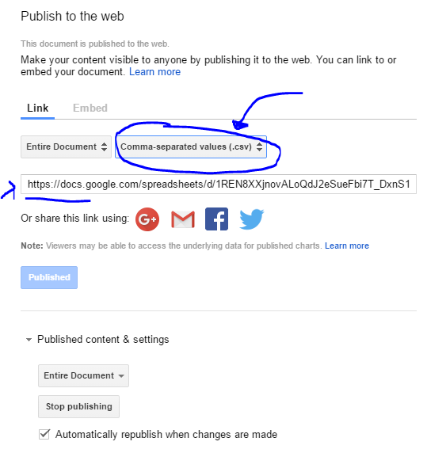

The League Feedback System - Manual
Developed By Matthew Smith and Rouya Yan - 2016
Thank you for choosing the League Feedback System, also known as the Constructive Feedback System! This document will outline how to effectively use the platform, and perform maintenance on it.
Installation
The League Feedback System has already been installed at the League by yours truly, and as such, most people won't need this section. This section is, however, for you if the webserver or app somehow got deleted, in which case, your probably panicking, so I'll get right to it...
Android App
The Android rating app may be reinstalled at any point onto a device that is running any version of Android 17 and up. Please note that the device will need to be connected to Wi-Fi, or mobile data for any ratings to be submitted. Make sure to look below at the Customization - Android section to change the what URL the data is submitted and read from!
Link to Android App
Web Server
The Web Server contains all the php and html files that do most of the dirty work to keep this system in tip-top shape. You can download them below. Drag the folder onto your server, and make sure the landing page is set to 'test.php'. Make sure to look at the Customization - Web Server section below to hook up the php with your calendar spreadsheet, and database!
Link to Web Server Files
Database
Sorry folks, no easy to download files here, but come'on, setting up a table in SQL isn't that hard...Follow this list of columns and put them into a new database
- classID
- teacherName
- funRating
- informationRating
Now you should be good to go as far as the database is speaking.
Customization
Want to change the colors, or look and feel of the site? Go edit the code yourself...sorry. What this section is really about is changing important things like the teachers spreadsheet, or database location. All jokes aside, If you really want to customize the website look, Its not too hard, considering everything is made using
Bootstrap.
Android App
- Look under 'DataBaseFunctions.java' to change the web address that ratings get Posted too
- Look under 'GetTeachers.java' to change the web address that teachers are gotten from
Web Server
- Look under 'connection.php' to change where the database is
- Look under 'getTeachers.php' to change the web address to where the class schedule spreadsheet is located Note : The link must be to a CSV google docs spreadsheet. To get the link from your spreadsheet, see below:
File -> Publish To Web ->

Database
Umm...I'm not really sure how you would want to customize a database, but knock yourself out! It doesn't matter what else you have in your database as long as the columns listed above (under Installation - Database) are present, you could store all the data you want in the rest of the table.
Just Beware! The delete data function in The Feedback System TRUNCATES the entire table, so all data in that table will be lost!
Clearing Data
You need to edit the php for this one, and with good reason. We don't want any old joe-shmow deleting all your ratings now would we? Navigate, on your Web Server, to 'deleteData.php', then open it up. Un-comment the SQL query, (It's the one line that is commented out). Last step is to load [yourUrlHere].deleteData.php in any web browser. Once refreshed, all data will be deleted!
Make sure to re-comment the SQL query as to prevent deleteData.php from being an active trip-mine!
Libraries Used
- Bootstrap
- Chart.js
- Volley
- ShowStorm.js (See you during holidays!)
Thanks for Using The League Feedback System!
Developed By : Matthew Smith, Rouya Yan, and help from Site Mao!
For technical help, contact matt86707@gmail.com with the subject, "League Feedback."